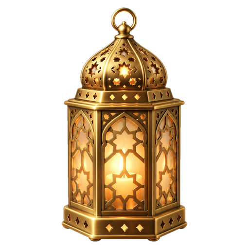
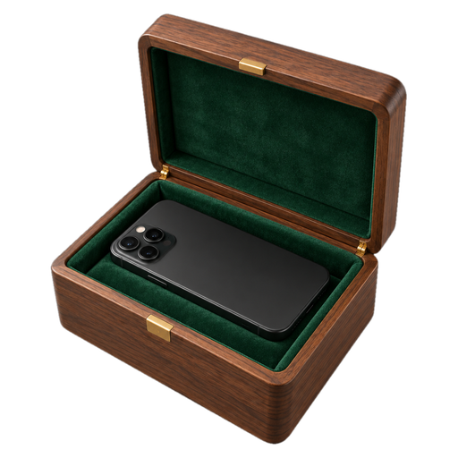
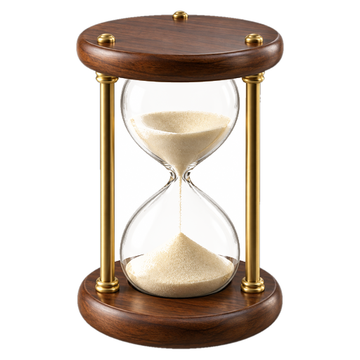

Hisn, in Unchaind's design language
Not a copy of our general edition. New: 39 sayings from Ibn al-Qayyim (al-Jawāb al-Kāfī, al-Fawāʾid, Ighātha) and Tazkiyat al-Nufūs, each read in the book with its page, placed where they help (Help now, a closed page, coming back, reflection, time) and gathered on a scholars' page. Also: an onboarding built from the best of Unchaind, CleanPath, Opal, Unrot and our general app, in four chapters, with a filmstrip of every step, a gallery of every screen and a features map further down. The app opens in Arabic, right to left, on every screen (English is one tap away), with Naskh titles, Amiri Quran for verses, Arabic numerals and Hijri dates first. New in earlier rounds: the general app's protection layers as real screens, notes on the calendar, three logo options, repainted objects, Arabic for the core path, and motion. This is Unchaind's own visual system: an airy sky, a layered landscape at the bottom, serif headlines, white numbered cards, glossy 3D objects, a deep pill button and a red help bar. It is made Islamic, and the screens are Hisn's. Tap through the phone. It works: answer the quiz, hold to promise, start Help now, breathe, make du'a. Switch the look on the right; the same screen in all three looks is below.
Try it
Everything is clickable inside the phone. The list jumps straight to a screen.
This screen in all three looks
Onboarding: five apps, the best of each
Unchaind, CleanPath and Unrot were captured on the owner's iPhone, Opal on the owner's Samsung, and our general app is read from its code (28 steps in four chapters). Each row is what that app does best and what Hisn takes.
| App | Its onboarding | Best idea | Hisn takes | Hisn leaves |
|---|---|---|---|---|
| Unchaind | Verse, welcome, 14-question quiz, "calculating", 37% result, 5 harm slides, 6 benefits, goals, 5 pledges, rating, quit date, paywall, tour. 89 screens. | Faith as the reason; a verse under each pledge | Verse splash, numbered quiz cards, deep slides with one object, goals, five held pledges, the tour | Invented result, shame slides, sexual questions, paywall |
| CleanPath | "Map your path" in 2 minutes, why you're here, streak intro, notifications in context, 13-question score, results, harms, how we help, reviews, 90-day path, paywall, login, name, tour. | One question a screen and a picture of the exact Android setting | Notifications asked right after showing why; the picture guide for each switch | "95/100 severe", fake reviews, login after paying |
| Opal | One sentence a screen, "tap to continue", a short chat, permissions as switches, "how it works" in three taps, a suggested block list, a held commitment, then a hard paywall. | Explaining the product with your own story before asking anything | The one-line opening, "How it works" in three frames, switches with one line of why, suggestions from real usage | "15 years of your life", account first, no-exit paywall |
| Unrot (iOS) | Mascot, name, a chat with your brain, "how do you want to spend the time", hours scrolled maths, feelings after scrolling, rating, notifications, fingerprint hold, a 4-week plan, two paths, paywall. | Asking what you'll do instead, and naming the weeks | The Instead picker (Islamic and physical), the plan in four named parts | Coins, guessed "106 days a year", fake rating |
| Our general app | Four chapters with a segmented bar: You, Why it's hard, What helps, Your plan. Demo, name, age, goals, when, feel, real usage, cost, tricks, helps, Instead, apps, a live try, quiet hours, your note, plan, switches, notifications, a test block, hold. | Real numbers from Android, a live test, your own reason | The four chapters and bar, real usage, your line for hard minutes, "Try it now" | Nothing: it is the base |
Hisn's onboarding, chapter by chapter
25 screens in four chapters, in the order a person meets them. Everything here is also in the phone above; tap any frame to open it there.
Every other screen
Features
Everything Hisn does, grouped. Tap a feature to open its screen in the phone.
The system
Fajr
Closest to Unchaind: dawn rose over plum hills, indigo buttons. Warm and gentle.
Madinah
Ivory and emerald with gold. The most clearly Islamic, and close to Hisn's green.
Layl
Night: indigo with a gold lamp colour. Like Unchaind's dark mode, for the night hours.
Objects
 Muṣḥaf
Muṣḥaf Misbaha
Misbaha
Lantern Prayer rug
Prayer rug Du'a
Du'a Wuḍūʾ
Wuḍūʾ Milestone
Milestone Shield
Shield
Face down Ḥiṣn
Ḥiṣn Lock
Lock
Open Wait Fasting
Fasting Companion
CompanionType
Guard your gaze
Young Serif for titles · Outfit for text · Amiri for the Qur'an · IBM Plex Sans Arabic for Arabic interface.
ذَٰلِكَ أَزْكَىٰ لَهُمْ
What stays Hisn
Every protection layer and tool from the current app (DNS, apps, words, images, lock, guardian, Focus, Open Wait, quiet hours, limits) is in the toolbox and Shield, drawn in this style. Only the look changes.